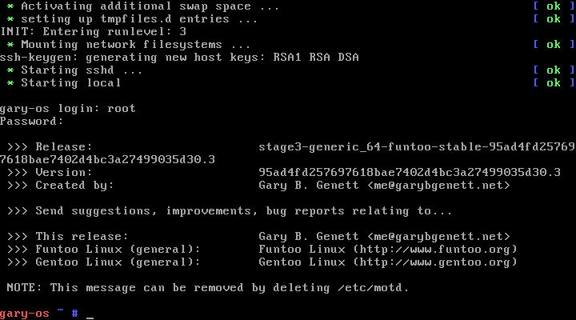

Welcome to GaryOS (gary-os)

“The one file that does it all.”
- Latest: GaryOS v3.0 (64-bit) (32-bit) (Release Notes) (License)
- Homepage: https://github.com/garybgenett/gary-os
- Download: https://sourceforge.net/projects/gary-os
Contents
Overview
GaryOS is an entire GNU/Linux system in a single bootable file.
While most boot/rescue systems use an ISO with SquashFS, GaryOS is
a single binary file consisting of a Linux kernel and a Funtoo/Gentoo
initramfs. The file is generated using a customized Funtoo/Gentoo
configuration with a default Grml Linux kernel configuration via the
Metro automated build tool.
There are currently no major projects which take this same approach on
this scale. The result is a smaller boot/rescue file that is just as
comprehensive, yet easier to deploy and manage.
A list of the primary advantages:
- Complete Funtoo/Gentoo system, with toolchain
- Entire system resides in memory; does not require media after boot
- Forensics mode is the default; no hard drives are mounted and swap
is disabled - Deployment flexibility; can be seamlessly used anywhere a Linux
kernel is supported, such as PXE or Microsoft Windows bootloader - Smaller footprint can easily fit on boot partition or USB media
- Does not require disposable and fragile CD/DVD media
The main disadvantages:
- Requires bootable media and configured bootloader (PXE, Grub, etc.)
- Constrained in size; initramfs must compress to less than 500MB
hard-coded limit in Linux kernel - Boot time can be a bit longer/slower than other “live” systems
GaryOS enables you to drop a single file on any media, point
a bootloader at it and go. Upgrades are as simple as replacing the
file and/or adding another bootloader entry.
Rescue media is more likely to be available and up-to-date if it is
convenient to deploy and manage, which is one of the primary aims of
GaryOS.

Quick Start
If you just want to check it out, you can run it inside any
virtualization program that can boot a Linux kernel directly. On
a GNU/Linux system with Qemu installed, this can be as trivial as:
DISPLAY=:0 qemu -m 4096 -kernel gary-os-[...].kernel
To use it “for real”, simply point your bootloader (such as Grub) to the
file on disk. In Grub, this looks like:
linux gary-os-[...].kernel
All the standard Linux kernel options/parameters are valid. For
example, the amount of memory Linux allocates to itself can be specified
as usual:
linux gary-os-[...].kernel mem=4096m
A minimum of 2-3GB of RAM is required, but a minimum of 4GB is
recommended. There are files for both 64-bit and 32-bit processors,
but only x86 platforms are supported.
Twice during boot, at initial kernel load and initramfs extraction, it
can appear to hang as the kernel/initramfs is extracted into memory.
This is normal, and only takes a few moments each.
Once booted, the entire system resides in memory. It is a blank slate
with only two daemons running (Udev and SSH). It does not touch any
disks or otherwise do anything you don’t tell it to.
- Log in as
rootwith passwordgary-os.
From there, whatever rescue/administrative work that needs to be done
can be accomplished, including using emerge to install or upgrade
packages.
The in-memory filesystem is a complete Funtoo/Gentoo installation, and
can be copied to a partition just like a standard stage3 file. GaryOS
goes one step further, however, since a Linux kernel has already been
prepared. Simply configuring and installing Grub will result in
a ready-to-go Funtoo/Gentoo installation.
Version History
2015-03-16 v3.0 21811b59a8484b2a6b73e0c5277f23c50a0141dc.0
- 64-bit: gary-os-generic_64-funtoo-stable-v3.0.kernel
- 32-bit: gary-os-generic_32-funtoo-stable-v3.0.kernel
- Metro/Grub scripts
- Release checklist in Metro script
- General updates for upstream Metro changes/enhancements
- Minor configuration updates for LVM, Postfix and Vim
- Date variables for Funtoo/Grml upstream files/images
- Warnings for non-matching upstream files/images
- Miscellaneous syntax clean-up
- Additional debugging option in Grub script
- Updated list of Grub rescue modules
- Grub rescue options variable
- Funtoo/Gentoo configuration
- Updated to new Portage commit
- Minor improvements to audit/review scripting
- Fixed
USEvariable, enabling Udev globally - Added additional input drivers, for touch devices
- Added helper packages for networking and basic X.Org GUI scripting
2014-06-19 v2.0 873ca4a3a4e6ff41e510dbcf2e0fe549fb23474d.0
- 64-bit: gary-os-generic_64-funtoo-stable-v2.0.kernel
- 32-bit: gary-os-generic_32-funtoo-stable-v2.0.kernel
- Metro/Grub scripts
- Added creation of package list files
- Added
METRO_DEBUGvariable, for testing - Improved customization of
LDFLAGSandUSEvariables - Better exemption handling for packages which fail to build
- Fixed initrd build, so that it is more generally useful/applicable
- Added documentation repository to commit tracking
- Included Git repository in root filesystem, for reference
- Moved Git repository handling to dedicated “git-export” function
- Renamed example Grub disk image to a better extension
- Funtoo/Gentoo configuration
- Updated to new Portage commit
- Complete review/revamp of USE flags
- Added
LDFLAGSvariable options specific to Metro - Cleaned up “_overlay” directory
- Improvements to audit/review scripting
- Minor configuration updates/improvements
- Localized failed package commenting to 32-bit
- Revised package list, adding CLI (Command-Line Interface) helpers
and X.Org GUI, while pruning packages that are not as generally
useful or widely implemented- In particular, removed custom Perl modules, Funtoo/Gentoo
developer/specialized packages, document processing utilities,
virtualization tools and media software - Previously, the X.Org GUI was a specific non-goal of the
project. However, certain extremely useful packages (such as
Wireshark) required it. The additional screen real-estate is
also useful for management of multiple terminals and
web-browsing for solutions to issues. In order to meet these
needs, it was decided to incorporate X.Org GUI packages with
a minimal window manager footprint. - CLI interface remains the default (see Minimal X.Org GUI
section for information on loading up and using the graphical
environment).
- In particular, removed custom Perl modules, Funtoo/Gentoo
2014-03-13 v1.1 95ad4fd257697618bae7402d4bc3a27499035d30.4
- 64-bit: gary-os-generic_64-funtoo-stable-v1.1.kernel
- 32-bit: gary-os-generic_32-funtoo-stable-v1.1.kernel
- Metro/Grub scripts
- Added Linux kernel configurations from Grml, to provide more
comprehensive and flexible hardware/feature support - Created Grub script, for rescue and dual-boot
- Syntax and formatting clean-up
- Added Linux kernel configurations from Grml, to provide more
- Funtoo/Gentoo configuration
- Miscellaneous package changes
2014-02-28 v1.0 95ad4fd257697618bae7402d4bc3a27499035d30.3
- 64-bit: gary-os-generic_64-funtoo-stable-v1.0.kernel
- 32-bit: gary-os-generic_32-funtoo-stable-v1.0.kernel
- Metro script
- Completed support for both 64-bit and 32-bit builds
- Switched to
genericfor all builds - Removed
-fomit-frame-pointerGCC flag - Removed Grub customizations
- Re-added
/bootand/var/db/pkgdirectories, so the initramfs
can be used as a “stage3” replacement - Added release/distribution processing
- Funtoo/Gentoo configuration
- Commented packages that broke during 32-bit build
2014-02-24 v0.3 95ad4fd257697618bae7402d4bc3a27499035d30.2
- 64-bit: gary-os-core2_64-funtoo-stable-v0.3.kernel
- Metro script
- Consolidated kernel/initrd into single kernel/initramfs file
- Added initial support for both 64-bit and 32-bit builds
- Funtoo/Gentoo configuration
- Updated build/installation script with code to expand Metro
“stage3” files for testing package builds and fixing breaks - Customized package list and USE flags for Metro build, to reduce
size of installation to below 500MB Linux kernel limit - Completely removed X, Java and TeX Live / LaTeX
- Added sound and miscellaneous media packages
- Updated build/installation script with code to expand Metro
2014-02-13 v0.2 95ad4fd257697618bae7402d4bc3a27499035d30.1
- 64-bit kernel: gary-os-core2_64-funtoo-stable-v0.2.kernel
- 64-bit initrd: gary-os-core2_64-funtoo-stable-v0.2.initrd
- Metro script
- Added revision handling
- Funtoo/Gentoo configuration
- Added packages from Grml and SystemRescueCD package lists
- Enabled
gpmUSE flag
2014-02-09 v0.1 95ad4fd257697618bae7402d4bc3a27499035d30.0
- 64-bit kernel: gary-os-core2_64-funtoo-stable-v0.1.kernel
- 32-bit initrd: gary-os-core2_64-funtoo-stable-v0.1.initrd
- Metro script
- Initial proof of concept, with separate kernel/initrd files
- Funtoo/Gentoo configuration
- Active personal configuration at time of build
- Commented packages that broke
Design
GaryOS was not really “designed”, per se. It just kind of happened
organically. Any lack of production value to the code is a result of
that.
Initially, the goal was just to learn the Metro system so I could roll
my own “stage3” files. As I continued to merge in my configuration
customizations, the difference between a “stage3” and a system that
could be run “live” began to disappear.
In parallel, explorations of Buildroot/Busybox introduced me to the
embedded initramfs concept, and gave me the idea to package the guts of
the “stage3” files from Metro into a Linux kernel for a relatively novel
“live” OS.
If not for my life partner, Rachel, it all would have stopped there.
Her prodding to “go for it” pushed me from just thinking about
publishing this as an opensource project into actually doing it.
I did not name the project GaryOS out of any delusions of grandeur or
egomania. Indeed, the name was coined not by me but two very good
friends of mine, Steve and Colin, who used to (and still do) poke fun at
the amount of time and effort I spent/spend tuning and customizing my
computing environment. They jokingly called my workstation “GaryOS”,
when it was really nothing more than a heavily personalized and
automated system using the tools and configuration options made
available by all the projects whose software I use. Since GaryOS really
is nothing more than my own “wrapping” on the more mature work of
others, it seemed fitting to name the project as such in
a tongue-in-cheek and somewhat self-deprecating manner.
That final point is worth re-iterating: GaryOS is 95%+ the work of other
projects. All I’ve done is tie things together in a way I find novel,
appealing and useful.
Goals
While not originally “designed” in the traditional sense, GaryOS does
have clear structure and requirements.
Top requirements:
- Bootable from a single kernel file, using initramfs
- Based on Funtoo/Gentoo, using “stage3” build automation
- Generic kernel/build configuration; should run on most modern x86
platforms (both 64-bit and 32-bit) - Minimal customization of default installation, outside of package
build tuning (i.e. “portage” configuration) - Make Funtoo/Gentoo installation trivial as a “live” media
- All-purpose, multi-OS rescue environment
Other objectives:
- Widely deployable; support PXE and native dual-booting with other
popular OSes, such as Windows and Mac OS X - Learning environment for those new to GNU/Linux or Funtoo/Gentoo
- Example configuration and scripts for tuning and maintaining
a Funtoo/Gentoo system - Maintain DIY (Do It Yourself) approach; favor documentation and
instructions over helper scripts - Provide upstream enhancements to “stage3” automation
Explicit non-goals:
- Growing bigger than a single kernel file
- Customization or deep branding of overall system
- Development of helper scripts/commands library, or customization of
boot and “init” infrastructure - Becoming a complete desktop environment (minimal X.Org GUI only)
Rationale
I thought it important to document my thoughts regarding the good deal
of focus on the “single bootable file” aspect of GaryOS as its primary
differentiator from other “live” systems.
The number of “live” systems, for everything from basic rescue to a full
workstation, is quite staggering. Not all that long ago, building a new
“live” system required quite a bit of creativity and expertise.
Projects like KNOPPIX had provided a methodology, but the implementation
was very specific to the project. It wasn’t until Debian created their
Debian Live project, to automate creation of their installation media,
that “live” technology really blossomed. Subsequently, a number of
projects using forks of this system emerged, including the perennially
useful Grml. It is much easier to create a new or forked “live” system
today than it was a couple years ago.
Personally, I think the real value of GaryOS is as a bootstrap media for
installing Funtoo/Gentoo, which was really my original focus when
exploring Metro. Funtoo/Gentoo can be installed pretty much from any
system, using a “stage3” and “chroot”. Getting from there to a basic
system ready to be booted can take a bit of time and effort, though, and
GaryOS can be a very useful tool for getting to a “half-way mark” of
sorts. A functioning bootloader and kernel, along with a good many
tools already installed, can make getting over the installation hump
a bit easier. I’ve often wondered if the lack of a “ready-to-go”
Funtoo/Gentoo system has hampered growth of the user-base, as
inexperienced users gravitate towards more ready-made and
marketing-savvy distributions like Ubuntu.
Getting back to a “single bootable file” in comparison to traditional
ISO-based “live” systems, ISO files have a couple options for use:
- Write to CD/DVD media, and boot from there
- Write directly to USB media, and boot from there
- Extract to USB media, and install/configure bootloader manually
- Manually extract kernel, initrd and SquashFS to media, and
configure bootloader similarly to ISO bootloader (usually ISOLINUX) - Boot ISO file directly, using “loop” functionality of bootloader
The challenges and issues with each approach:
- USB drives are a much more convenient and usable boot media than
CDs/DVDs these days. They are easier to carry, harder to damage
and more ubiquitous (modern servers and laptops often don’t have
CD/DVD drives, but they all have USB). CDs/DVDs are also not as
re-usable as USB drives. - Both the options for transferring ISO media to USB are less than
ideal. This is the more convenient case, but requires you to erase
the rest of the contents of the drive. - This case preserves other data on the drive at the expense of
complexity. In both ISO media to USB cases, upgrading the ISO to
a new version is not as trivial as it should be. - I personally use this method, and it works relatively well.
However, it took a bit of time and patience to figure out how to
make it work, and upgrades still take a bit of diligence each time;
file names and locations often change, as do boot options and other
key values. - Grub provides the necessary “loop” functionality, but this works by
creating a “fake” CD/DVD-ROM drive that the booting OS can use,
essentially requiring a small Grub footprint to stay in memory and
for the boot media to stay connected through the entirety of the
session. It also requires the “live” system to support booting in
this manner.
The reason ISO files continue to be the standard package for “live”
systems is capacity and convenience. Outside of the Linux initramfs
method employed by GaryOS, there is no better way to package an entire
system into a single file that is ready to be booted in any number of
ways. As covered earlier, using a Linux initramfs limits the size of
the system that can be packaged. Thanks to modern compression
algorithms, GaryOS is able to get a roughly 2GB root filesystem
delivered. Most of the ISO systems deliver root filesystems much larger
than this.
I personally continue to employ #4 above to keep a selection of “live”
systems available on the boot media I carry with me everywhere. Systems
like Grml are still what I use when I need an immediate desktop or to
demonstrate the power and flexibility of GNU/Linux systems. However,
for rescue, recovery and installation, GaryOS has become my first pick
since it has all the tools I need configured the way I want them. If
I could only have one file available, it would be GaryOS, which is why
this project exists.
The reader, of course, must make up their own mind about what is best
for them.
Caveats
Humans are not perfect, and rarely is anything we create. I’m proud of
this project, but also want to be clear about its shortcomings.
Most notable is the code I’ve written to produce this. The coding style
I use was grown organically, and is not based on any of the well-known
syntax and style guides used by other projects. While consistent and
generally readable, there are a couple specific areas I’d like to
comment on, in order to avoid the appearance of ignorance, negligence or
just plain bad habits:
- Comments
- There are few, if any, of them. Most of the code is pretty
self-explanatory, at least to me, but may not be readily
digestible by others without documentation of the thought-process.
- There are few, if any, of them. Most of the code is pretty
- Columns
- I don’t try to be POSIX or any other type of compliance when
scripting for fun. Since I work on big monitors, I tend to make
my coding/writing terminals HUGE. Reading or modifying on an
80x25 terminal will frustrate you as much as it does me.
- I don’t try to be POSIX or any other type of compliance when
- Tabs
- I use them everywhere. This is not an issue really, except that
I’ve broken two of the ancient spacing rules:- In some places, I mix spaces and tabs intentionally
- I regularly use tabs for non-leading space
- Changing the “tab stop” to anything other than “8” will make the
formatting look even more ugly than it already is.
- I use them everywhere. This is not an issue really, except that
- Syntax
- I use explicit syntax everywhere, all the time. This keeps the
code consistent and therefore readable, in my humble opinion, but
it also adds a lot more characters. Some say they hate it and
that it makes their eyes bleed.
- I use explicit syntax everywhere, all the time. This keeps the
- Options
- There really aren’t any. Most of the configurability is
implemented in the form of variables at the top of each script.
Where there are command-line options, they are rudimentary and
undocumented. Someday I should add real argument processing and
the helpful “usage” output any reasonable user would expect.
- There really aren’t any. Most of the configurability is
- Cleverness
- I could use more of it. In a couple places, I could use a lot
less. I’m positive that I’ve taken the long route in a number of
cases. There’s a ton of “sed” and “piping” everywhere. Error
handling is best-effort. I probably should have done this all in
something more powerful, like Perl.
- I could use more of it. In a couple places, I could use a lot
- Salesmanship
- I’ve written much prettier code that I can’t or won’t share, so
this is one of the few public examples of my work at the current
time. Hopefully it doesn’t turn away any potential employers.
- I’ve written much prettier code that I can’t or won’t share, so
Another area of mention is the source code and repository management.
The configuration and coding history for this project resides in several
different personal repositories. The process used to pull the
individual commits out of each repository and consolidate them together
into the unified one that’s been made public is all documented in the
“metro.sh” script. As a matter of fact, the vast majority of that
script, which began life as a simple wrapper to Metro, is now the code
used to package and release GaryOS. The long and short of it is that
even minor disruptions to my personal repositories (such as a “rebase”),
or inclusion of other components/scripts into the GaryOS repository,
will result in a public repository that can not use the “fast-forward”
feature of Git and requires re-cloning. I will endeavor to avoid this,
but the risk does exist.
The final concern would be supportability. This is a mostly personal
project that I plan to update at least twice a year, but I don’t have
a copious amount of free time with which to support and enhance this
project.
Buyer beware. You own all the pieces.
Other than that, GaryOS should be rock-solid. ;^)
Details
In this section, I will try to outline the key pieces which make GaryOS
tick. The work will still pretty much speak for itself, but some
explanation of what all the stuff in this repository is will likely be
beneficial to anyone curious enough to have read this far.
Most of what is needed to use the contents of this repository is
contained in the Structure and Customizing sections below.
Similar Projects
Since the creation of GaryOS, I’ve discovered the following projects
during ongoing research:
- Better-Initramfs: https://github.com/slashbeast/better-initramfs
- Aboriginal Linux: http://landley.net/aboriginal/about.html
GaryOS shares many of the same goals and attributes/features as these
projects. The primary difference being that both these projects strive
to be minimalist and/or otherwise purely rescue/development focused.
GaryOS instead tries to be as complete an environment as possible while
still fitting in an initramfs.
Both projects are pretty damn awesome.
Tools
All the real heavy-lifting is accomplished using these tools/projects:
- Metro: http://www.funtoo.org/Metro_Quick_Start_Tutorial
- Funtoo: http://www.funtoo.org
- Gentoo: http://www.gentoo.org
- Linux Initramfs: http://www.kernel.org/doc/Documentation/filesystems/ramfs-rootfs-initramfs.txt
Inspiration was provided by:
- Buildroot: http://buildroot.uclibc.org
- BusyBox: http://www.busybox.net
- StaticPerl: http://software.schmorp.de/pkg/App-Staticperl.html
Kernel configuration, package lists and acknowledgments to:
- Grml: http://grml.org
- SystemRescueCd: http://www.sysresccd.org/SystemRescueCd_Homepage
Homage to those who started it all:
- tomsrtbt: http://www.toms.net/rb
- KNOPPIX: http://www.knopper.net/knoppix/index-en.html
- Debian Live: http://live.debian.net
Special thanks to the sites which made worldwide distribution possible:
- SourceForge: https://sourceforge.net
- GitHub: https://github.com
GitHub was instrumental in inspiring me to publish this project, but
SourceForge provided the distribution platform which made it possible to
reach an international audience overnight.
Structure
Here is documented the overall structure of the repository, along with
details for the individual components.
Top level directory
- Distribution:
- README.md
- This file. All the documentation for GaryOS.
- LICENSE.md
- The license GaryOS is distributed under.
- icon.png
- Creative “hack” to have an icon for the project. Icons make
it seem like you are “for real”, so I had to have one.
- Creative “hack” to have an icon for the project. Icons make
- screenshot_cli.png
- Pretty self-explanatory. Snapshot of what booting v1.0 looked
like, for promotion, reference and posterity.
- Pretty self-explanatory. Snapshot of what booting v1.0 looked
- screenshot_gui.png
- Also self-explanatory. Snapshot of the what the initial X.Org
GUI in v2.0 looked like.
- Also self-explanatory. Snapshot of the what the initial X.Org
- README.md
- Release:
- _commit
- Primarily for my tracking, records commit IDs for each of the
public and private repositories relevant to the building of
GaryOS. Updated each release.
- Primarily for my tracking, records commit IDs for each of the
- _config.64,
_config.32- Linux kernel configurations used for the 64-bit and 32-bit
builds, respectively. These are extracted from Grml ISOs
using “extract-ikconfig” in the “metro.sh” script. Updated
each release.
- Linux kernel configurations used for the 64-bit and 32-bit
- _packages.64,
_packages.32- Final package lists for the 64-bit and 32-bit builds,
respectively. These are generated from the “initrd” files in
the “metro.sh” script. Updated each release.
- Final package lists for the 64-bit and 32-bit builds,
- _commit
- Production:
- .bashrc
- My personal Bash configuration file, and also the scripting
library I use for almost all of my personal scripts. Several
variables and functions are sourced from this file, and it was
easier to just include it into this project than to replicate
all of the referenced pieces.
- My personal Bash configuration file, and also the scripting
- gentoo
- Contains the entirety of my personal Funtoo/Gentoo
configuration, including the scripts and files I use to manage
my Funtoo/Gentoo installations.
- Contains the entirety of my personal Funtoo/Gentoo
- scripts
- All the code used to create GaryOS lives in here. Exported
from my personal scripts directory.
- All the code used to create GaryOS lives in here. Exported
- .bashrc
Scripts directory
- As you would expect, there are scripts in this directory:
- grub.sh
- Used to produce two different types of Grub images. One is
for dual-booting purposes with other OSes, such as Windows,
and the other is to have a Grub “rescue” installation which
does not require access to any hard drive partitions for its
modules or configuration. - Documented in more detail in the Windows Dual-Boot and Grub
Rescue sections under Use Cases. - Not critical to GaryOS as a whole. Mainly to simplify and
automate the use cases mentioned.
- Used to produce two different types of Grub images. One is
- metro.sh
- In essence, this script IS GaryOS.
- Contains all of the wrapping of Metro used to create “stage3”
files using the Funtoo/Gentoo customizations below. - Does the work of extracting “stage3” files and selectively
archiving them into “initrd” files. The “initrd” files are
then compiled into the Linux kernel built inside the relevant
“stage3”. - Also houses the release process for GaryOS, which consists of
exporting patches from my personal repositories and
consolidating them into the final GaryOS repository. It also
adds release “tags” and publishes GaryOS to GitHub and
SourceForge.
- grub.sh
Gentoo directory and configuration
- Scripts:
- .colorize
- Hackish attempt to add colorization to compile output. It
works, but disrupts the sandbox environment and has caused
builds to break. Not used anymore, but kept for posterity.
- Hackish attempt to add colorization to compile output. It
- .emergent
- Audit script which validates current Funtoo/Gentoo
configuration against Portage tools/output. Reports back all
kinds of useful information, the most useful of which is
a list of USE flags and variables which have been added or
removed upstream. - Generally speaking, it is the first line of defense against
stale configuration options, unused/unconfigured new options
and configuration “snow” as a whole.
- Audit script which validates current Funtoo/Gentoo
- .hacks
- An aptly-named script, it performs all kinds of miscellaneous
corrections, fixes and customizations which generally keep me
happy.
- An aptly-named script, it performs all kinds of miscellaneous
- .colorize
- Management:
- _gentoo
- Directory of “okay” files used by “.emergent” script above.
- _overlay
- Funtoo/Gentoo “overlay” directory. Used very sparingly, and
mostly for fixing broken packages. - Fun side note: I wanted the “gkrellaclock” to look more like
a genuine “xclock”, so I hacked it into one. This was my
first real experience coding in C.
- Funtoo/Gentoo “overlay” directory. Used very sparingly, and
- _gentoo
- Automation:
- _system
- This script is the workhorse of my Funtoo/Gentoo system, just
as “metro.sh” is the core driver of GaryOS. - Most commonly, run without any arguments to update Portage
tree and pre-fetch source files. - Often run with
-uto completely update the installation,
based on recommendations from Funtoo/Gentoo documentation. - Used with
-[0/12]options for completely automated “chroot”
installation.
- This script is the workhorse of my Funtoo/Gentoo system, just
- _system
- Configuration:
- funtoo
- Contains the commit ID that the Funtoo Portage repository
should be “pinned” to. - Ties Funtoo/Gentoo configuration to a particular version of
the Portage tree, which ensures repeatability and stability.
- Contains the commit ID that the Funtoo Portage repository
- make.conf,
package.keywords,
package.license,
package.mask,
package.unmask,
package.use- Standard Funtoo/Gentoo Portage configuration files, documented
inman portage. - My personal configuration, most of which is carried over to
GaryOS.
- Standard Funtoo/Gentoo Portage configuration files, documented
- savedconfig
- Seemingly undocumented storage area for compile-time
configuration files. - dwm:
configuration for “dwm” window manager
- Seemingly undocumented storage area for compile-time
- sets
- funtoo
Customizing
Since these scripts and configurations were originally intended for
strictly personal use, they have a strong bias towards my directory
structure and processes. They are admittedly ill-suited to ready use
under other circumstances. Releasing the source of GaryOS is tantamount
to simply showing my work.
That said, I am a bit of a perfectionist and want all my code to be easy
to re-purpose, re-configure and generally support. All of the scripts
have been written with variables for all files/directories involved, and
these variables are placed at the top of each script. Pretty much
everything that would be configurable via a command-line option is
exposed as a variable.
Here are the primary directories and what I use them for:
$HOME/setup/gentoo- Funtoo/Gentoo configuration directory. Full contents are in the
“gentoo” directory in this repository. - Replicated to “/etc/portage” regularly.
- Funtoo/Gentoo configuration directory. Full contents are in the
/.g/_data/_build- Directory for source repositories and temporary builds. This is
ultimately a disposable working directory.
- Directory for source repositories and temporary builds. This is
/.g/_data/_builds- Output of builds which I intend to keep/track.
/.g/_data/_target/iso- Where I keep all downloaded binary files. Typically ISOs, there
are also miscellaneous files, like “stage3/portage” archives, and
documentation.
- Where I keep all downloaded binary files. Typically ISOs, there
/.g/_data/zactive- My main data directory. Most everything I create lives here.
/.g/_toor- Free partition, used for “chroot” builds and testing.
This is far from comprehensive, but should help map things out for
anyone with enough free time and curiosity.
In a perfect world, this section could be removed after the scripts were
cleaned up and documented properly.
Use Cases
Below are the primary use cases considered for GaryOS. Each is tested
every release, and contains validation information.
These are also considered the “howto” instructions for each case.
Forensics & Recovery
- Definition:
- Boot into a completely “clean” environment, so that diagnostics
and/or recovery can be done in a read-only manner.
- Boot into a completely “clean” environment, so that diagnostics
- Last tested with:
- GaryOS v3.0
GaryOS is in a forensics mode by default. Hardware scanning is
performed, but the hard drives are not mounted or otherwise touched.
All entries in /etc/fstab have been commented out. As a result, swap
is also disabled.
Linux kernel options can further be used to disable hardware scanning
and interrogation.
It is a stated goal that forensics mode continue being the default.
Networking Configuration
- Definition:
- Configure networking, either wired or wireless
- Last tested with:
- GaryOS v3.0
No networking configuration or daemons are run by default, but several
networking packages are installed to ease on-the-fly setup.
For simple DHCP, the dhcpcd command can be run directly on the desired
interface, such as an Ethernet connection:
dhcpcd eth0
A more formal way of doing this would be to use the OpenRC scripts:
rc-update add dhcpcd default ; rc
For wireless networking, the NetworkManager package is available to
simplify the configuration:
rc-update add NetworkManager default ; rc
Wireless networks can then be scanned and configured:
e.g. …
1
2
3
4nmcli device wifi rescan
nmcli device wifi list
nmcli device wifi connect [ssid] password [password]
nmcli device status
The Funtoo OpenRC scripts have all sorts of advanced networking features
and options, covered in depth:
http://www.funtoo.org/Networking
Minimal X.Org GUI
- Definition:
- Start up and use the X.Org GUI environment
- Last tested with:
- GaryOS v3.0
GaryOS boots to CLI (Command-Line Interface) by default. To enter the
graphical interface, run startx.
The Linux kernel includes driver modules for many common video cards,
but to keep the size of GaryOS down the X.Org installation only includes
the VESA driver (which almost all modern video cards support). If the
kernel driver for a video card is loaded at boot, it will prevent X.Org
from taking over. If you plan to run the graphical interface, use thenomodeset kernel option when booting to prevent Linux from loading any
video card drivers.
By default, the DWM window manager is used. URxvt is the default
terminal emulator, and Surf is the default browser. Both are wrapped
using the Tabbed utility.
Keyboard shortcuts:
- Use
ALT-SHIFT-ENTERto launch terminal emulator. - Use
ALT-CTRL-ENTERto launch web browser.
More information:
- Read
man dwmfor help on the window manager. - Read
man tabbedfor help on the tabbing utility. - Read
man urxvtfor help on the terminal emulator. - Read
man surffor help on the web browser.
Thanks to the Suckless team for creating such
lightweight and useful software.
Live Update
- Definition:
- Update/install packages using Funtoo/Gentoo tools.
- Last tested with:
- GaryOS v3.0, with 8GB memory
A complete Funtoo/Gentoo environment is available. In order to
install/update packages, a couple of missing items need to be put into
place. A surprising number of packages can be installed without filling
up the in-memory filesystem.
Instructions for setting up update/install of packages:
- Install “portage” tree.
- Option 1: Synchronize tree as usual.
emerge --sync
- Option 2: Download
portage-*archive from one of thev#.#
version download directories; preferably from the one which
matches your version of GaryOS. This option is best if you plan
to keep this file on the same media along side the GaryOS kernel
file(s). To extract:tar -pvvxJ -C /usr -f portage-[...].tar.xz
- Generally speaking, “Option 1” is a smaller/faster download than
“Option 2”. However, “Option 2” has the benefit of offline
access, and may be simpler to update from since it is at the same
revision of the tree that was used to build that version of
GaryOS.
- Option 1: Synchronize tree as usual.
Perform minor hacks to get working in a RAMdisk environment. These
should NOT be done if planning to install to disk per the
Installation section below. They essentially disable available
space checks, since the “portage” scripts expect to be using
a physical disk. Commands to run:…
1
2sed -i "s%has_space = False%has_space = True%g" \
/usr/lib/portage/pym/portage/package/ebuild/fetch.pyalias emerge="I_KNOW_WHAT_I_AM_DOING=true emerge"- For details, see
"There is NOT at least"in/usr/portage/eclass/check-reqs.eclass
- For details, see
- Make desired edits to
/etc/portageconfiguration.- In particular, to complete configuration of the X.Org GUI the
INPUT_DEVICESandVIDEO_CARDSvariables should be properly
configured. - Starting with
bindist, there is a list of negated-*options
at the end of theUSElist which are necessary to build GaryOS
via Metro. All of these can/should be removed to get the full
non-Metro configuration.
- In particular, to complete configuration of the X.Org GUI the
- Use all “portage” commands as usual.
- e.g.
emerge firefox
- e.g.
Installation
- Definition:
- Install GaryOS to disk as a “stage3” build.
- Last tested with:
- GaryOS v3.0
The in-memory environment is a complete Funtoo/Gentoo installation, as
shown in the Live Update section above. It can be copied directly to
a new disk/partition and booted as a fresh installation.
Instructions for installing to disk:
- Mount formatted disk/partition.
- e.g.
mke2fs -t ext4 -jv /dev/sda2 - e.g.
mount /dev/sda2 /mnt
- e.g.
- If you wish for
/bootto be on a separate partition, mount that
location in the target.- e.g.
mkdir /mnt/boot - e.g.
mount /dev/sda1 /mnt/boot
- e.g.
Copy in-memory filesystem to installation target.
e.g. …
1
2
3
4
5
6
7rsync -avv \
--filter=-_/dev/** \
--filter=-_/mnt/** \
--filter=-_/proc/** \
--filter=-_/run/** \
--filter=-_/sys/** \
/ /mnt
Add necessary partition information to
/etc/fstab, remembering an
entry for/bootif using a separate partition from #2 above.- e.g.
vi /mnt/etc/fstab
- e.g.
- Update and install Grub, to make the new installation bootable.
- e.g.
for FILE in dev proc sys ; do mount --bind /${FILE} /mnt/${FILE} ; done - e.g.
chroot /mnt grub-install /dev/sda - e.g.
chroot /mnt boot-update
- e.g.
- Reboot into new installation, update
/etc/portageconfiguration,
install “portage” tree and update/install packages as desired. - Don’t forget to change
hostnameand updaterootpassword!
Windows Dual-Boot
- Definition:
- Boot using the native Windows bootloader.
- No modifications to the hard drive partitions or boot records.
- Do not require any files outside of
C:in the Windows
installation.
- Last tested with:
- GaryOS v3.0
- MBR/GPT only; EFI not built or tested
- Windows 7 Ultimate SP1 64-bit
- Grub: sys-boot/grub-2.02_beta2-r3
- Research and development:
For convenience and supportability, this case has been mostly automated
in the grub.sh script. The gary-os.grub.* file in the root download
directory contains an archive of the output of this script.
Overview of the script:
- When run without arguments, it creates a series of Grub images and
configuration files in the current directory. - When run with a single block device argument, the target device will
be used for installation of the “rescue” Grub image, rather than the
example disk image file.
Overview of the output:
bcdedit.bat- Used to install/remove the necessary entries from the Windows
bootloader database.
- Used to install/remove the necessary entries from the Windows
bootstrap.*- Grub “core.img” and configuration loaded from the Windows
bootloader. Uses the directory added toC:(instructions below)
for modules (such asi386-pcdirectory) and menu configuration.
- Grub “core.img” and configuration loaded from the Windows
grub.cfg- Grub menu used by “bootstrap” above. Can be modified as needed to
boot other OSes/objects.
- Grub menu used by “bootstrap” above. Can be modified as needed to
rescue.*- Grub “core.img” rescue environment detailed further in Grub
Rescue section below.
- Grub “core.img” rescue environment detailed further in Grub
rescue_example.raw- Hard disk image file example of installation of Grub “rescue”
environment.
- Hard disk image file example of installation of Grub “rescue”
Instructions for Windows bootloader dual-boot:
- The script assumes a default installation, with a small boot
partition as partition 1 and WindowsC:on partition 2. All
other partitions must be 3 or higher. Configurations that do not
match this will require minor edits to the script, and a fresh
build of the output directory. - Copy the output directory to
C:\gary-os.grub, or wherever the
script has been modified to point to. - Run the
bcdedit.batscript as Administrator. Running this script
without Administrator privileges can cause unexpected and/or
undesired results. Thebcdedit.guid.txtfile that is created is
necessary for automatic removal of the created boot entry. - Place the GaryOS files at these locations:
C:\gary-os-64.kernelC:\gary-os-32.kernel
- Use the new option in the Windows bootloader to switch to Grub and
boot GaryOS (or other OSes/objects bootable by Grub). Doing
nothing will boot into Windows as usual. - Simply update the GaryOS files in-place to upgrade.
- Run the
bcdedit.batscript as Administrator to remove from the
Windows bootloader configuration. The directory and files created
inC:need to be removed manually.
If the bcdedit.guid.txt file is lost, or otherwise becomes out of
date with the bootloader database, use the bcdedit command as
Administrator to remove the unwanted entries:
- Run
cmdas Administrator. - Run
bcdeditto view the bootloader database. Copy theidentifierfield for each GaryOS entry. - Run
bcdedit /delete {identifier} /cleanupfor each entry. Note
that the{identifier}should be replaced with the full string
output in #2 above, including the{}markers.- e.g.
bcdedit /delete {02a0fce9-68f5-11e3-aa07-e94d28b95f82} /cleanup
- e.g.
Grub Rescue
- Definition:
- Boot into a mostly complete Grub environment directly from the
boot record without requiring any additional files from disk. - Create a Grub “core.img” which can be booted using identical
methods and options as GaryOS, such as PXE, Qemu, etc.
- Boot into a mostly complete Grub environment directly from the
- Last tested with:
- Tested in place of GaryOS with both Qemu and PXE.
- For details on PXE, see the PXE Boot section below.
- Grub: sys-boot/grub-2.02_beta2-r3
- Tested in place of GaryOS with both Qemu and PXE.
- Research and development:
For convenience and supportability, this case has also been automated in
the grub.sh script. The gary-os.grub.* file in the root download
directory contains an archive of the output of this script. However,
for this case the script will need to be run locally. The Windows
Dual-Boot section above has more details on the grub.sh script and
its usage and output.
Instructions for Grub “rescue” image installation to hard disk:
- Create an empty working directory:
- e.g.
mkdir /tmp/grub
- e.g.
- Change into the working directory:
- e.g.
cd /tmp/grub
- e.g.
- Run the
grub.shscript with a block device argument:- e.g.
grub.sh /dev/sda
- e.g.
- The script will create necessary files in the working directory,
and then usesgrub-bios-setupto install the custom-built
“core.img” into the boot record. - The block device can now be booted directly into a Grub environment
which does not require any access to disk for its modules or
configuration.- The working directory is no longer needed and can be deleted.
- To remove, simply re-install Grub using
grub-installas usual, or
install another bootloader.
PXE Boot
- Definition:
- Boot from a PXE environment.
- With some modification of the Funtoo/Gentoo configuration and
package list, this Metro automation can be used to create a lab
workstation or other automated environment where a reboot
completely resets each machine involved.
- Last tested with:
- GaryOS v3.0
- DHCPd: net-misc/dhcp-4.2.5_p1-r2
- TFTPd: net-misc/iputils-20121221-r2
- iPXE: sys-firmware/ipxe-1.0.0_p20130624-r2
- Research and development:
Once you have a functioning PXE environment, on a global or per-host
basis add the following configuration option to dhcpd.conf:
filename "gary-os-[...].kernel";